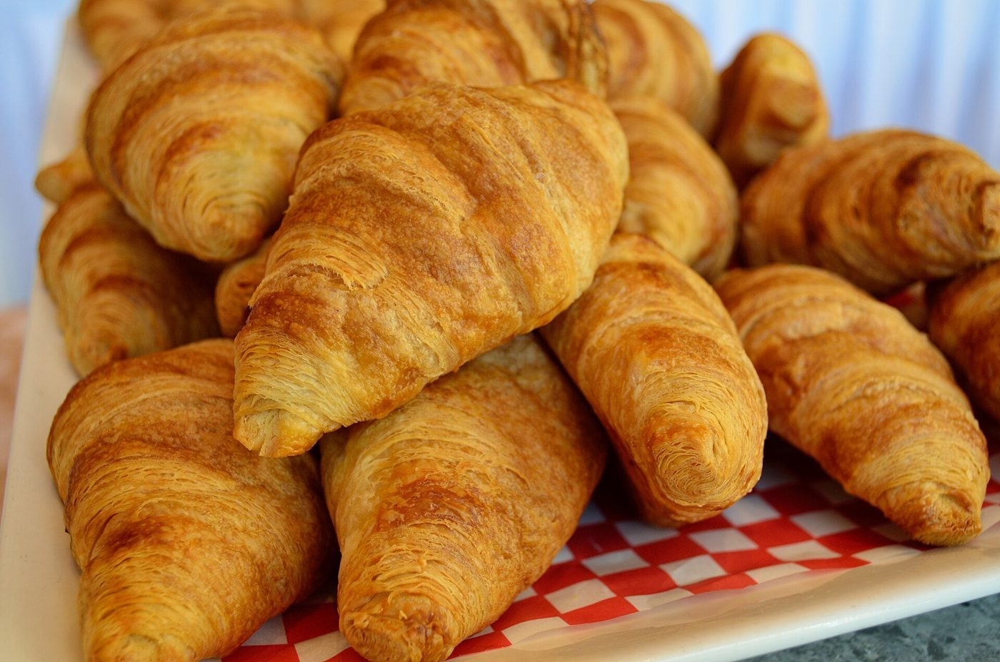
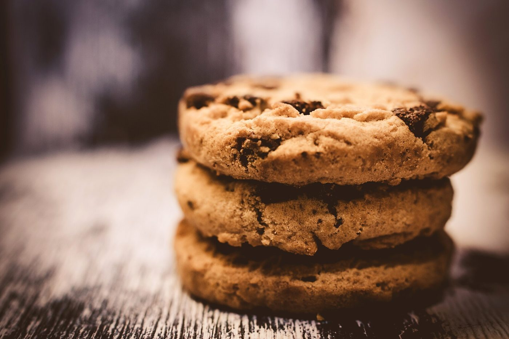

パティスリーカフェ / 宮城県
コションパティスリーカフェ
「コションパティスリーカフェ」のご案内ページです。営業時間やメニューなど、詳しいことは準備中。まずはInstagramをのぞいてみてください。
図1 手回しサイレンの断面(制作側のイラスト)
制作側の連想
手回しサイレンの部位を、配置図にしてみる
このサイトは、ハンドルを回して鳴らす古いタイプのサイレンを、断面図にしたものです。六つの部位に番号をふり、上の図と並べています。制作側の連想で、お店の理念・由来とは無関係です。実際の機器の仕様を示すものでもありません。
凡例
六つの部位
- 1ホーン音を外へ広げる、ラッパ状の開口部。
- 2ハウジングステーターとローターを収める、円筒形の本体。
- 3ステーター細長い穴をいくつも並べた、動かない固定板。
- 4ローター同じように穴を並べた回転板。回ると穴が重なっては離れる。
- 5クランクハンドル手で回すための、折れ曲がった握り。
- 6取付ベース台にしっかり据えるための土台の板。
ギャラリー(イメージ)
パンとコーヒー豆の写真


写真はパンとコーヒー豆のイメージです。お店のものではなく、お店で提供している商品を示すものでもありません。
ギャラリー(イメージ)
カップと焼き菓子の写真



写真はカップや焼き菓子のイメージです。お店のものではなく、お店で提供している商品を示すものでもありません。
ご案内
お店のこと(確認できたものだけ)
| 所在地 | 〒981-0124 宮城県宮城郡利府町沢乙東２−７ |
|---|---|
| 電話 | 準備中 |
| 営業時間 | 準備中 |
| 定休日 | 準備中 |
| ご予約 | 準備中 |
| 駐車場 | 準備中 |
| SNS | Instagram @cochonpatisseriecafe |